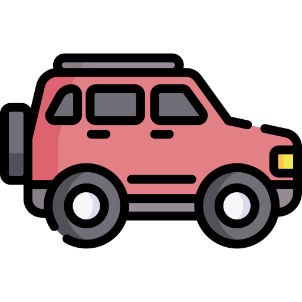

-
Scotter
- A scooter is a two-wheeled motor vehicle with a step-through frame and a platform for the rider's feed. It is known for its ease of use and fuel efficiency.
- Motorcycle
- A motorcycle is a two-wheeled motor vechicle witha more upright seating position and typically a nanual transmission . It is popular for its performance and versatility.
- Hatchback
- A hatchback is a type of car with a rear door that opens upwards,providing access to a cargo area.It is known for its compact size and practically.
- Sedan
- A sedan is a four-door passenger car witha seperate trunk for cargo.It is often chosen for its comfortable and sqacious interior.
-  SUV (Sports Utility Vehicle)
- An SUV is a larger vehicle designed for off-road capabilities and versality.It is popular for its high driving position adn ample cargo space.Iorem*12
- MUV (Multi Utility Vehicle)
- An MUV is a vehicle designed to transport passengers and cargo.It often features a spacious interior and is suitable for family use.
-
 Electric Vehicle
Electric Vehicle
- An electric vehicle is powered by one or more electric motors,using energy stored in rechargeable batteries.It is chosen for its eco-friendly and sustainable features.